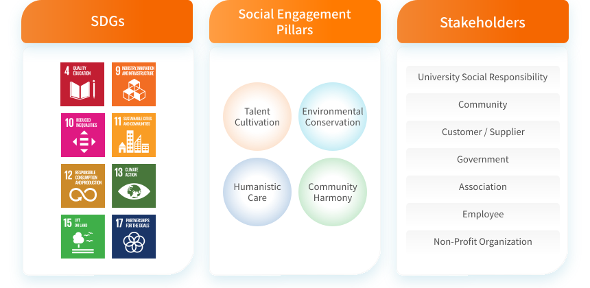
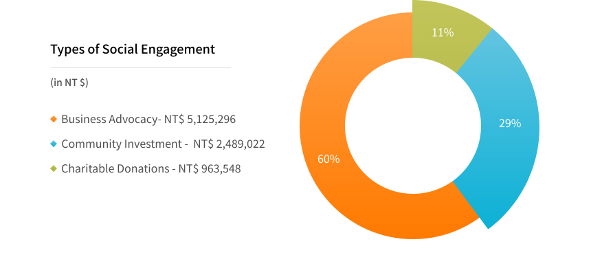
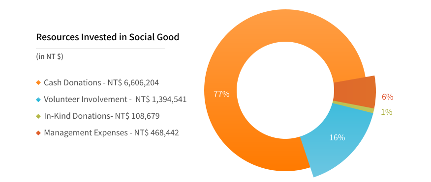
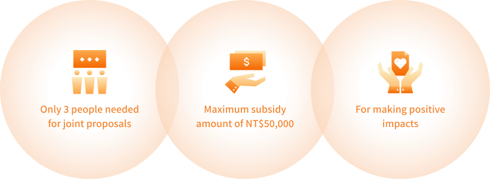
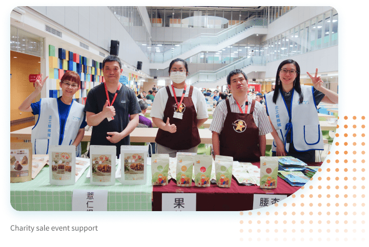

Common Good An Active Contributor to Society
Nanya is committed to social engagement and participates in public affairs and local care to become an active participant that gives back to the society. We promote social influence and community development to lead society to a better and sustainable future.

- The hours Nanya Technology has spent on social engagement increased by 22% compared to the previous year 3,571.5 hours
- Total investment in social engagement amounted to NT$20,545,733, increase compared to the previous year 57 %
- Promoting fair-trade concepts toward responsible consumption 4,131 participants
Strategy and Performance of Material Topics
 Social Influence
Social Influence
Nanya combined its core value and corresponded to the United Nations Sustainable Development Goals (SDGs). Nanya's four themes of social engagement, including "Talent Cultivation," "Environmental Conservation," "Humanistic Care," and "Community Harmony," were developed on this basis. We took actions based on the themes, formulated short, medium and long-term goals, linked internal and external resources of the Company, took action for social engagement, and played the role of a leader to create greater influence.

- Talent Cultivation
- Environmental Conservation
- Humanistic Care
- Community Harmony
-
Talent Cultivation
Content
- Educating global citizens about sustainability concepts
- Cultivating design thinking in youth for effective problem-solving
- Supporting technical talent to ensure stable supply of semiconductor professionals
- Cultivating specialized talent
Business Benefits- Managers serving as mentors (4 managers engaged)
- Online exposure (press releases in 2 media outlets)
- Supporting student athletes with professional expertise (8 people)
Social Benefits- Promoted sustainability education to 1,536 students
- Sponsored athletes with funding (NT$278,000)
-
Environmental Conservation
Content
- Improving public environmental knowledge and literacy, establishing concepts of environmental protection and sustainability awareness
- Organizing cleanups to restore a clean public environment
- Protecting biodiversity by preventing habitat degradation and the spread of invasive species, which contribute to biodiversity loss
Business Benefits- Employee cohesion (523 employees participated)
- Online exposure (2,837 social media interactions)
- Online exposure (press releases in 5 media outlets)
- Environmental advocacy (2 environmental advocacy activities engaged)
Social Benefits- Environmental biodiversity (70.5 kg of mikania vine removed)
- Ocean-friendly activities (63.6 kg of coastal waste removed)
-
Humanistic Care
Content
- People-oriented approach to improve public humanistic literacy and broaden their perspectives
- Supporting local cultural and artistic development
- Helping local cultural and historical groups dedicated to their hometowns
- Providing care and platforms for disadvantaged groups to promote their ideas
- Promoting responsible consumption concepts and developing mutually beneficial lifestyle
Business Benefits- Employee cohesion (552 employees participated)
- Charity (4 certificates of appreciation awarded)
- Supporting local farmers (8 farms supported)
Social Benefits- Responsible consumption (charity sales and farmers' markets generated approximately NT$360,000 in product sales)
- Reducing wealth inequity (9 organizations supported)
- Boosting the community economy (179 kg of fair-trade coffee purchased)
- Promoting responsible consumption (reached approximately 4,131 people)
-
Community Harmony
Content
- Focusing on local welfare, aligning neighborhood services, promoting neighborhood well-being, and implementing social welfare efforts
- Aligning social resources to promote local sustainable operations
Business Benefits- Strengthening neighborhood relationships (2 certificates of appreciation awarded)
Social Benefits- Deepening community communication (helped improve road facilities, benefiting 16,671 people in surrounding neighborhoods)
- Enhancing neighborhood disaster prevention capacity (5,100 fire extinguishers replaced and refilled)
Resources Invested in Social Good
Believing that change begins with action, Nanya Technology fully understands the importance of making an impact. Therefore, we adopt the London Benchmarking Model (LBG) to measure the benefits and impacts of public welfare activities. This allows us to allocate resources more reasonably and adjust our charity programs to better align our core operations with social needs.This approach will deepen and expand Nanya Technology's long-term impact on society, ultimately realizing the vision of a beautiful home built on mutual benefits.
- Types of Social Engagement
- Resources Invested in Social Good
-
Types of Social Engagement

-
Resources Invested in Social Good

Social Engagement
Social Engagement Project
Nanya Technology's investment in social engagement is more than one-way public welfare activities or donations. We aim to address current social and environmental issues. Therefore, as we shape our four key pillars of social engagement, we continue to link resources from industry, government, academia, and research to create positive impact. We take the initiative in promoting Talent Cultivation, Environmental Conservation, Humanistic Care, and Community Harmony. Through presenting our outcomes, Nanya Technology aims to communicate our commitments toward Interaction, Mutual Benefits, Locality, and Connection with the public.
- Talent Cultivation
- Environmental Conservation
- Humanistic Care
- Community Harmony
-
Talent Cultivation
Sustainable Education Blueprint : Instilling ESG Sustainability Concepts in Youth
Nanya Technology is committed to tackling various sustainability issues and actively promotes awareness and understanding of Environment, Social, Governance (ESG), Corporate Social Responsibility (CSR), the United Nations Sustainable Development Goals (SDGs), climate change, and more. We combined our resources with school to provide in-depth ESG training to each student, and enable sustainability concepts to flourish on campus. The sustainable education blueprint project aims to connect industry, government, academia, and research to nurture technological professionals, while further supporting diverse talent, empowering women, and promoting outstanding students with cross-disciplinary expertise to achieve quality education.
- Educated 1,536 students in total
-
The Student-Athlete Scholarship: Includes table tennis, skating, taekwondo, and competitive gymnastics
Sponsored 5 national athletes and 3 sports talents

-
Design Thinking • Creative Integration
For three consecutive years, Nanya Technology has collaborated with Ming Chi University of Technology, integrating the school's University Social Responsibility (USR) initiatives with design thinking courses to instill a deep understanding of sustainability in students' hearts.
-
Cross-Disciplinary Innovation and Women Empowerment
Nanya Technology was invited to participate in communication platforms organized by the Taiwan Crossover Co-Creation Association (TCCA) and Taiwan IC Industry & Academia Research Alliance (TIARA), which not only provides learning and growth opportunities for young students, but also demonstrates to the public the important role of technology in promoting sustainable development.
-
Student-Athlete Scholarship
Nanya Technology's education blueprint extends beyond graduate schools, colleges, and high schools in the DRAM industry. Starting in 2022, Nanya Technology began providing the Student-Athlete Scholarship to colleagues' children, serves as a resource provider, offering student athletes with stable financial support during their training.
-
Environmental Conservation
Earth Hour 60 Earth Day 365: Responding to International Environmental Conservation Actions to Broaden Our Impact
Nanya Technology organizes a series of Earth Hour 60 Earth Day 365 events to raise awareness about environmental conservation through hands-on experiences. Externally, Nanya Technology works with various partners to support world environmental conservation days; internally, we raise environmental awareness each year with a different theme, thereby increasing everyone's understanding about topics ranging from ecology, natural habitats, to climate change. Through company-organized hands-on activities, Nanya Technology fosters a sense of mission among colleagues to protect the Earth.
- Network Influence 2,837 Facebook Interactions

-
Arbor Day
Nanya Technology participated in Taoyuan City's tree planting event with Mayor Simon Chang, government officials, local representatives, business groups, and citizens. Nanya's employees received native tree seedlings and participated in tree planting, passing on correct values of environmental protection.
-
Garbage Produced from a Single Meal
Behind our convenient lives lie many environmental issues that often go unnoticed. Nanya Technology invited colleagues to document and share on Facebook photos of the garbage produced from a single meal, and raised awareness of the waste we often take for granted. This activity helped colleagues understand the Earth's limited resources and reflect on the resource usage in their daily lives, thereby strengthening their understanding about environmental conservation.
-
Species Survey
Nanya Technology partnered with the Society of Wilderness to promote awareness of the natural environment surrounding its facilities. Employees and their families were invited to observe various species within the area, fostering greater respect for the ecosystem. Utilizing the globally recognized iNaturalist platform, participants uploaded photos of the species they encountered to help build an ecological database of Nanya Technology's surroundings. This initiative strengthened the ties between community and land, and enhanced awareness of environmental sustainability. A total of 650 observation records covering 170 species were uploaded that day.
-
Humanistic Care
Humanistic Care
Responsible Consumption: Every Purchase is a Vote for the Future You Want
- Employee purchases around NT$ 360,000 worth of products
- Promotion reached 4,131 people

-
Responsible Consumption Market
Nanya Technology invites charity organizations to hold charity sales during festive events. Through tangible purchasing actions, we support products made by these organizations, helping individuals from sheltered workshops apply the job skills they've learned. At the same time, in collaboration with the Taipei Branch of Agency of Rural Development and Soil and Water Conservation, MOA, we invite local small farmers to hold farmers markets. These events promote the concept of responsible consumption, create closer connections between employees and locally sourced food, and encourage the purchase of environmentally friendly products, further supporting the sustainable development of the land we live on. Annual sales totaling NT$234,471 worth of goods.
-
Fair-Trade Coffee
Since 2018, Nanya Technology has introduced fair-trade coffee in the company pantries. For just NT$10, employees can enjoy a cup of fair-trade coffee, making it easy for colleagues to support sustainability. Nanya Technology has also established a fair-trade demonstration pantry to promote fair-trade and SDGs. This initiative helps colleagues understand that the cup of coffee they enjoy in the pantry every day represents much more than just the beverage itself.
-
World Fair-Trade Day
Nanya Technology sponsored FairTrade Taiwan to organize an event "Guided Dadaocheng Walking Tour," open to the public. The tour took participants through Dadaocheng to learn about fair-trade concepts. Both the on-site lecture and guided tour received enthusiastic feedback and featured a stamp collection activity to support businesses aligned with fair-trade and sustainability principles.
-
Community Harmony
Community Harmony
Partnering with Neighborhoods: Engaging in Neighborhood Public Affairs to Create a Harmonious and Mutually Beneficial Living Environment
- Sponsored a total of approximately NT$ 6.85 million

-
Year-End Dining Gathering
Understanding the needs of local disadvantaged groups, Nanya Technology has been regularly collaborating with Nan Ya Plastics Corporation and the Taishan District Office since 2020 to organize year-end dining gatherings. These events aim to address local needs and provide care for disadvantaged residents in the community.
-
Protecting Road Users' Safety
Located in Taishan District, the access road near the facilities serves as a crucial commuting route for employees traveling between Taishan, Nanlin Technology Park, and Nanya Technology. However, this access road is narrow and poses significant traffic safety risks during peak hours. With new facility expansion projects underway, the presence of gravel trucks and construction vehicles has further increased these risks. To enhance road safety, Nanya Technology is supporting the Taishan District Office through an adoption sponsorship, assisting in a two-phase annual project to optimize the access road.
-
Promotion of Local Arts
Nanya Technology supports arts promotion and values its bonding with the local community. In collaboration with Nan Ya Plastics Corporation, Nanya Technology sponsored Apple Theater's performance of The Adventure in Candy Forest at the Taishan Gymnasium. Local residents were invited to enjoy the show with their families, enriching children's artistic experiences while fostering closer ties with the community.
 Love Connection X Nanya Technology Volunteer Team—One May Go Fast, But a Group May Go Even Farther
Love Connection X Nanya Technology Volunteer Team—One May Go Fast, But a Group May Go Even Farther

Volunteer Training for Animal Rescue, Organized by the Taiwan Cetacean Society
Love Connection
To expand its impact and bring various charitable ideas to light, Nanya Technology has started Love Connection in 2021. This advocacy encourages employees to propose ideas based on social issues they care about. Nanya Technology provides funding to support employees and turn these meaningful ideas into real actions, spreading kindness throughout Nanya and fostering a positive cycle. This year (2024), 9 projects have been successfully completed, indicating that this project is growing and becoming popular among employees. This measure not only advances various social engagement goals but also provides a platform for employees to participate, share experiences, and build a better society together. This initiative will continue to unite more people and resources, delivering greater positive energy to society.
- Completed 9 Projects
- A Total of 144 People Involved
Love Connection Project Implementation Rules


Nanya Technology Volunteer Team
To enhance Nanya Technology's commitment to social engagement, the Nanya Technology Volunteer Team was established in 2021. The President serves as the Convener, the Executive Vice President as Deputy Convener, and the Vice President as Team Leader to strengthen volunteer recruitment efforts. Established in 2021 during the pandemic, the team faced challenges in promoting events and increasing participation. However, as pandemic restrictions eased in 2022, there were 150 volunteer partners actively participating in various public welfare activities both within and outside Nanya Technology by 2024. These included New Year charity sales booths, Arbor Day activities, charity runs, local cultural celebrations, and environmental conservation events. To enhance volunteer professionalism, a series of volunteer lectures and appreciation tea parties were organized in 2024, allowing volunteers to learn together, share experiences, and strengthen their understanding of ESG sustainability principles.
- Nanya Technology Volunteer Team 150 volunteers
- Co-hosted 13 physical social engagement events
- Held 2 volunteer lectures 440 participants responded
Explore the full story here
Download
 ESG News
ESG News
 Facebook
Facebook